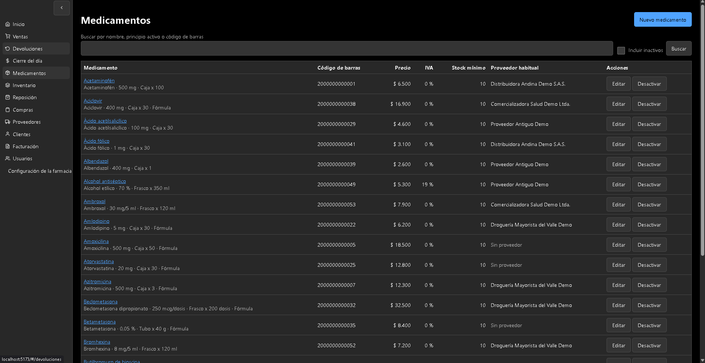

Algunas pantallas del sistema. Todas las capturas usan datos de prueba.
Panel principal Resumen del día y accesos a los módulos.Pantalla de ventas Con suma automática, selección de método de pago y multiples pantallas de ventas.

Pantalla de medicamentos Con su valor, proveedor, saldo minimo y posibilidad de agregar más medicamentosPantalla del inventario Con capacidad de exportación de datos en Excel